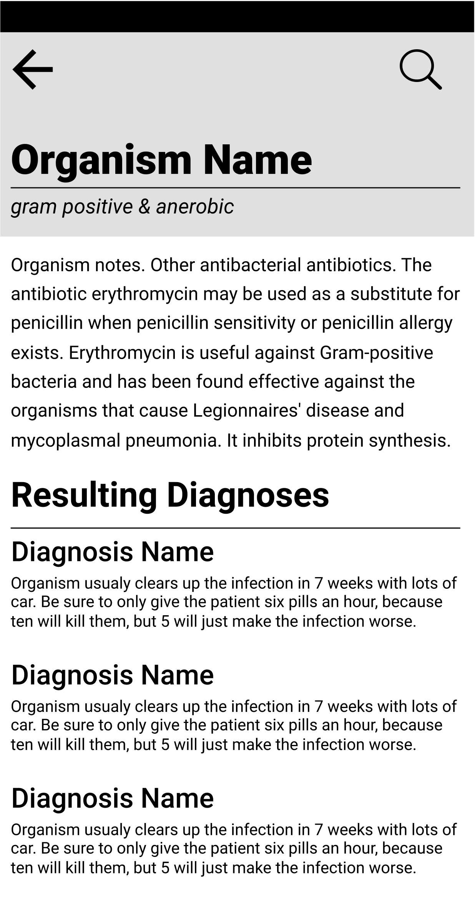
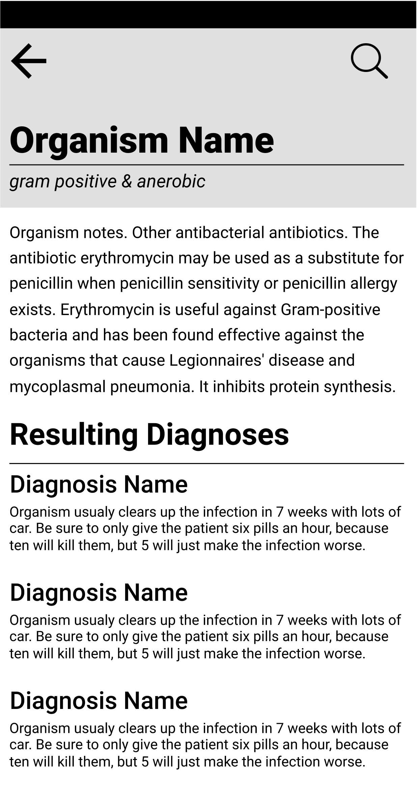

CCMC Antibiotics
UX Independent Study, in partnership with the Connecticut Children's Medical Center — Spring 2017
Background: Many developing countries have gone straight to adopting smartphones, skipping over computers and laptops, so while the internet is fairly widespread, connections are often weak. Without a quality internet connection, doctors are generally given a textbook education, meaning they are great at diagnosing patients, but are only aware of the one antibiotic their textbook suggests for treatment. Their hospitals are also operating with very limited resources. Therefore, they don’t always have access to the latest information or a wide variety of antibiotics. Because of this, doctors are forced to send patients home without treatment.
About the project: CCMC Antibiotics is intended to fix this problem. With the app, users are able to search their diagnosis to find a ranked list of alternative antibiotics that are suitable for treatment, with notes on how to administer the drugs. The app also contains helpful notes on the diagnoses, and antibiotics themselves, as well as causal organisms. All of this information will be cached on devices for faster access and kept up to date through the accompanying admin portal.
My roll: I was brought onto the project as a UX/UI designer after most of the initial client meetings and planning took place. Another designer and I were tasked with expanding upon the introductory work the previous designers had left us with, thinking through user stories to complete user and admin facing wireframes. Our process involved weekly critiques with the entire team, followed by iterative adjustments and further expansion of the design. Designing the UI for the app started with several variations of two key screens, and was built out once a style was chosen by the group. With the final design, my last task was to code out a kitchen sink with all the basic components, including any state changes.

 



Design rationale: The target user for this app is a doctor in Haiti. The major challenges faced in this process include designing for low powered smartphones, users who may not be as familiar with technology as those of us in the United States, and creating a visual language that is fun and optimistic, while maintaining its sense of authority and trustworthiness. To account for low powered devices, the design had to be as minimal as possible. Only two typefaces are used (Robot and Robot Mono) both of which are a part of Google fonts, and standard on Android. The app is very text heavy, which helps with speed, but does not make it very readable, so icons were implemented in key locations throughout to make scanning easier, as well as aid non-native english speakers. In addition to keeping the app light, having such a minimal and straightforward layout helps users navigate with ease. To offset the overall depressing nature of hospitals, we wanted the app to feel a bit more optimistic. This was achieved through generous whitespace, bright colors, and rounded corners. We chose to use teal as our main color, inspired by the color of scrubs, and white, to give it a clean, airy feel. To maintain an image of trustworthiness the language used throughout the app is professional, and the layout isn’t overly designed, puting the content first. Elements are more rounded, creating a welcoming feel, with a darker hard edge to show depth, and a faint shadow to soften it up.